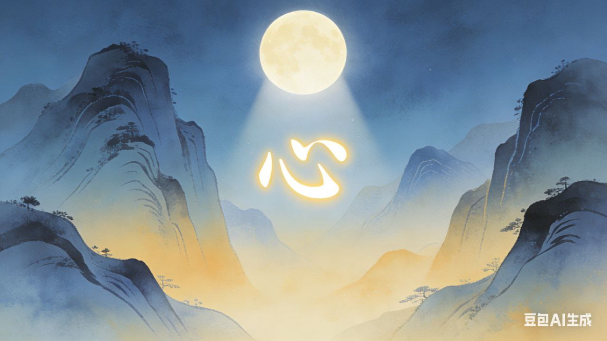

欲望 (yùwàng) and 愿望 (yuànwàng)
Remembering Chinese words is not easy if you can't grasp the underlying logic. The logic however is more like a poetic riddle than what we used to call logic. But these two words? Once you see what they mean, you won't unsee them.

Part One: 欲 (yù) — The Wanting
The first character 欲 is made of two parts.
On top is 谷 (gǔ). It tells us how to say the word — "yu."
On bottom is 欠 (qiàn). It gives us the meaning.
欠 — The Open Mouth
欠 is a radical that shows a person (人) with their mouth wide open (⺈).
Think about it. When you're hungry, your mouth opens. When you're thirsty, your mouth opens. When you see something you desperately want, your lips part slightly, almost without thinking. The body shows the desire before the mind even names it. That's 欠 — the physical feeling of lack.
You see this radical everywhere in words connected to the mouth and breath:
- 吹 (chuī) — to blow. Mouth (口) + 欠. You purse your lips and push air out.
- 飲 (yǐn) — to drink. Food/eat (食) + 欠. A person bending over, mouth open, to drink.
- 歌 (gē) — to sing. Brother (哥) + 欠. Open-mouthed, making sound.
- 歡 (huān) — joy, happiness. A bird (雚) singing with open beak + 欠. The sound of delight pouring out.
- 欣 (xīn) — joy, gladness. Axe (斤) + 欠. My imagination sees a crazy person with an ax laughing madly.
- 欺 (qī) — to deceive. Also contains 欠. A mouth open and a basket — maybe somebody eating from a basket while lying.
So 欠 is a physical experience. It is very visual. You must think of an open mouth.
谷 — The Valley
Now the top part: 谷 (gǔ).
谷 means "valley." A valley is land that is lower than the land around it. A river cut through it. It is usually V-shaped. The character itself looks like a wedge.
Here is the important part. Water "wants" to go lower. So a valley already carries the idea of desire. Water flows down. It follows its nature. The top of the character means flow. The bottom mouth is where it flows.
So what do we have? An open mouth. And a valley. A valley is a hollow space in the earth. An open mouth is a hollow space in the body. Put them together, and 欲 becomes something beautiful: the feeling of emptiness that wants to be filled.
谷 also gives sound to other characters:
- 浴 (yù) — to bathe (water + valley)
- 裕 (yù) — abundant, wealthy (clothes + valley)
- 俗 (sú) — custom, vulgar (person + valley)
- 容 (róng) — to contain, appearance (roof + valley). We usually contain our desires in front of people.
So 欲 is desire as lack. It is the body recognizing its own emptiness. It is water wanting to flow downhill. It is the open mouth that needs to be filled.
Part Two: 望 (wàng) — The Gazing
The second character, 望, means "to gaze," "to hope," "to long for." It also means "the full moon."
Let us break it down.
At its heart, 望 contains 𡈼 (tǐng) — a person standing on the ground, on tiptoe, stretching upward. You can feel the effort. Heels lift. Neck extends. The whole body reaches toward something far away.
Above this standing figure is 月 (yuè) — the moon. The thing we look at. Far away. Beautiful. It cycles endlessly through death and rebirth.
And contributing the sound, completing the picture, is 亡 (wáng) — meaning "to be absent," "to disappear," "to die."
So the character shows: a person standing on tiptoe, gazing at the distant moon. The person is missing something important. That is why they stretch and look. So is it the moon or the absence that matters most? The 亡 seems to point to the deep reason.
This is the character for hope.
望 in other words
望 appears everywhere in Chinese, always carrying this feeling of distance and longing:
- 望月 (wàng yuè) — to gaze at the moon
- 盼望 (pànwàng) — to hope for, to look forward to
- 渴望 (kěwàng) — to thirst for, to desperately want
- 失望 (shīwàng) — to lose hope, to be disappointed (literally: "lose the gaze")
- 希望 (xīwàng) — to hope, wish (希 means "rare, scarce" — so together: to hope for what is scarce)
And then there is the full moon itself: 望日 (wàng rì) — the 15th day of the lunar month, when the moon is at its fullest, when what was absent has returned completely.
The same character means both "to gaze" and "the full moon" because the two are tied together. We gaze at what we miss. When it returns, we are complete.
Part Three: 愿望 (yuànwàng) — The Heart's Wish
Now, desire is an emotion. It would make sense to use the heart radical 心 for both words. But 欲望 does not have heart. 愿望 does.
愿 (yuàn) means wish from the heart. It is made of 原 (yuán, source) and 心 (xīn, heart). So 愿 is the heart's original intention. The deep wish that comes from who you really are.
Put it with 望. 愿望 is the heart's wish, gazed at from afar. It is gentle. It is aspirational. It can be unrealistic, but it is pure. You look toward it like a star.
欲望 is different. 欲 is the gaping void. The body's lack. The hunger that needs filling. Put it with 望. 欲望 is the gaze of craving. You look at something and want to consume it. To fill the emptiness.
The core difference
| 愿望 (yuànwàng) | 欲望 (yùwàng) | |
|---|---|---|
| Core | 愿 — the original heart | 欲 — the gaping void |
| The feeling | A wish. A hope. Comes from your true self. | A craving. An urge. Comes from lack. |
| Nature | Gentle. Aspirational. Long-term. Like a star. | Strong. Urgent. Immediate. Like hunger. |
| The gaze | You look at something beautiful and hope. | You look at something and want to possess. |
| Example | 我的愿望是环游世界。 (My wish is to travel the world.) | 他对金钱的欲望很强。 (His desire for money is strong.) |
Part Four: Other Ways of Wanting
Chinese has many characters for wanting. They often share the heart, or the mouth, or the eyes.
想 (xiǎng) — to think, to want, to miss. 相 (mutual) + 心 (heart). Thoughts arising from the heart. 我想你 — I miss you.
念 (niàn) — to think of, to miss. 今 (now) + 心 (heart). The heart focused on the present moment. Dwelling on someone. 思念 — to miss.
愿 (yuàn) — wish, desire, to be willing. 原 (source) + 心 (heart). The heart's original wish. 愿望, 愿意.
渴 (kě) — thirsty, to long for. 氵 (water) + 曷 (phonetic). Thirst becomes any strong desire. 渴望 — to yearn.
盼 (pàn) — to hope for, to long for. 目 (eye) + 分 (to divide). The eye looking outward, scanning, waiting. 盼望 — to look forward to.
羡 (xiàn) — to envy, to admire. 羊 (sheep) + 次 (second) + saliva. Drooling over a sheep. Envy for something tasty.
贪 (tān) — greedy, covetous. 今 (now) + 贝 (money). Immediate desire for wealth.
慕 (mù) — to admire, to yearn for. 莫 (phonetic) + 心 (heart). The heart reaching out. 羡慕 — to envy, admire.
恋 (liàn) — to love, to long for. 亦 (also) + 心 (heart). The heart attached. 恋爱 — love.
愁 (chóu) — worry, anxiety. 秋 (autumn) + 心 (heart). The heart feeling autumn's melancholy. A kind of longing.
And 欠 itself — to owe, to lack. The root of all desire.
Part Five: Words That Surround 欲望
Once you see it, you notice it everywhere.
欲 appears in words that trace the shape of wanting:
- 食欲 (shíyù) — appetite (food + desire)
- 性欲 (xìngyù) — sexual desire (nature + desire)
- 求知欲 (qiúzhīyù) — curiosity (seek + know + desire)
- 欲火 (yùhuǒ) — the fire of desire (desire + fire)
望 appears in words that map the geography of hope:
- 绝望 (juéwàng) — despair (cut off + hope)
- 愿望 (yuànwàng) — wish (wish + hope)
- 守望 (shǒuwàng) — to keep watch (guard + gaze)
- 威望 (wēiwàng) — prestige (awe + being looked up to)
And there is a nice chengyu: 望梅止渴 (wàng méi zhǐ kě) — "gazing at plums to quench thirst."
It comes from the Three Kingdoms period. Soldiers were exhausted and dehydrated. Their commander told them plum trees lay ahead. Just thinking of the sour plums made their mouths water. Their thirst eased.
This is 欲望 in miniature. The open mouth of thirst. Soothed by gazing at what is not yet there. The body responds to the horizon. Hope becomes physical.
Final Thoughts
So here they are. Two ways of wanting.
欲望 is the strong desire to poses.
愿望 is the gentle aspirational want.
One comes from lack. One comes from aspiration.
Both make us human.
Home Page